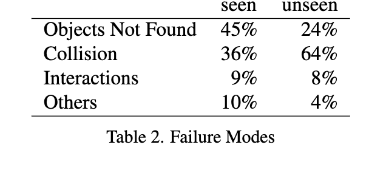
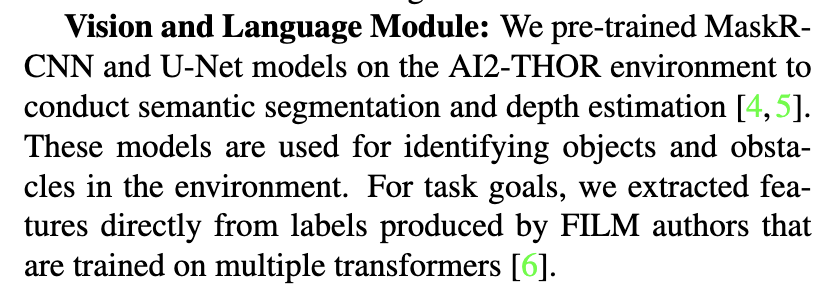
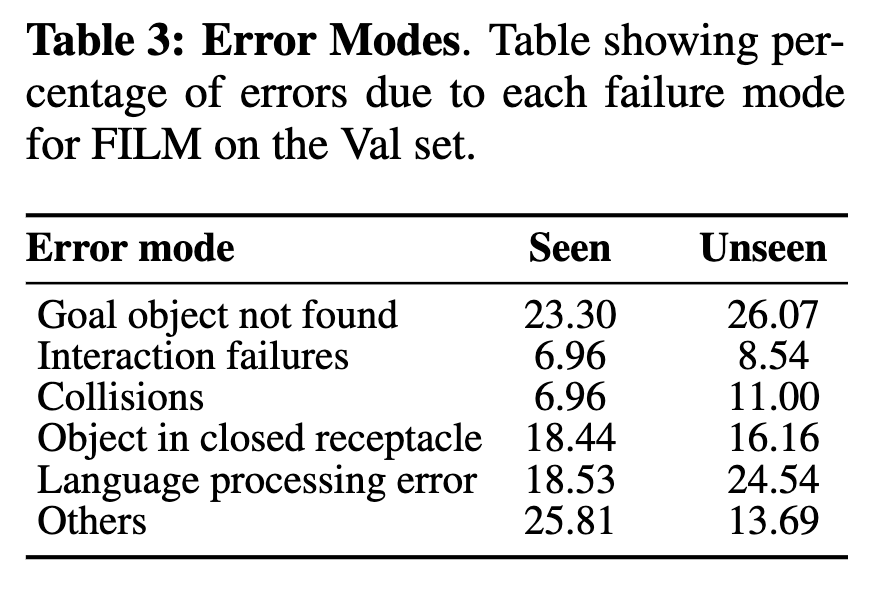
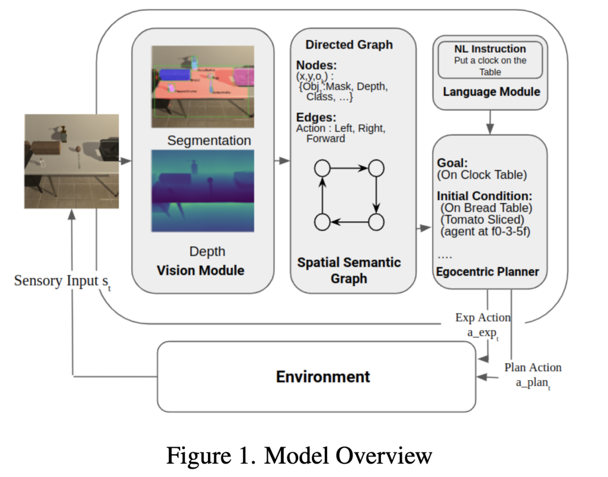
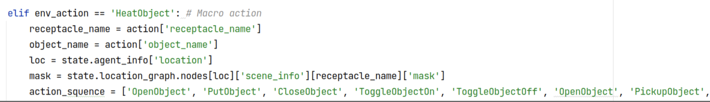
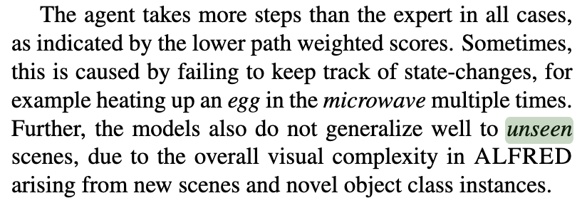

Previous Work Review#
- We get the source code from Mr Xiaotian Liu @ ServiceNow Co. However, the code is not executable because he hasn’t shared with me some necessary datasets. I have sent an email to him to ask for the missing datasets.
You need password to access to the content, go to Slack *#phdsukai to find more.
Part of this article is encrypted with password:
[TOC]
TODO List#
-
understand the ServiceNow’s source code
-
understand FILM source code -
figure out what contributes to the failure
-
ServiceNow Model
-

- it is weird that there is no “language processing error” section in ServiceNow Model failure mode table
-

-
-
FILM model
-

-
Recall: what are the possible research directions#
- RQ1: how to use low-level instructions to assist the construction of the spatial semantic graph (i.e., the World Model)?
- this is a multimodal learning problem -> using both visual observations and low-level language to construct the semantic graph.
- low-level instructions should have the same semantic meaning as the plan generated by the planner -> RQ2: how to translate low-level instructions to PDDL plan or the other way round?
- so this is a semantic parsing problem
- we notice that there is still a gap between the planed action and the real action (e.g., action in the plan (Pickup, Apple), real action sequence: <RotateLeft, Forward, Click>)
- the trajectory sequence (in RGB) should match with the low-level instructions RQ3: how to map low-level instructions to low-level actions (instruction following)?
- the low-level actions is dependent both on the low-level instruction and the current environment.
- this is a visual observation and language alignment problem (aligning state, action, temporal constraints?)
- maybe we can continue to think about how to build a better reward model for the agent to follow instructions.
- the trajectory sequence (in RGB) should match with the low-level instructions RQ3: how to map low-level instructions to low-level actions (instruction following)?
Understand the ServiceNow’s source code#
https://embodied-ai.org/papers/2022/15.pdf

Some features of the model#
-
No plan B if the language module or the vision module failed
-
the agent used 400 steps to explore the environment so as to construct its semantic graph (briefly explain how the semantic graph looks like)
- if it finds all the important objects within 400 steps, then it will generate a plan
- if not, then it will ask the agent to explore 200 more steps so as to update its spatial semantic graph and replan
- if there is still no solution, then the agent will raise an error.
-
But It has a weird heuristic exploration strategy (i.e., keep moving forward until it reaches a dead end, then it either turns left or right)
-
The model uses macro actions
-
the author designed some macro actions, e.g., clean_object, heat_object (check line 405 in
solver.py)
-
these macro actions are specifically designed for certain task types
-
1 2 3 4 5 6 7GOALS = ["pick_and_place_simple", "pick_two_obj_and_place", "look_at_obj_in_light", "pick_clean_then_place_in_recep", "pick_heat_then_place_in_recep", "pick_cool_then_place_in_recep", "pick_and_place_with_movable_recep"]
-
-
-
there is no MoveBack action in ALFRED environment
- MoveBack is replaced by “RotateRight, RotateRight, MoveAhead”
-
Their spatial semantic graph is a “DiGraph” in NetworkX library. The node data structure is like a python dictionary
-
The model used a very heuristic way to parse “task info” from the pddl file
-
1 2 3 4 5 6 7 8 9 10 11 12 13 14 15 16 17 18 19 20 21 22 23 24 25 26 27 28 29 30 31 32 33 34 35 36def extract_goal_valid(self, traj_data): goal_dict = {} goal_type = traj_data['task_type'] goal_object = traj_data['pddl_params']['object_target'] goal_receptacle = traj_data['pddl_params']['parent_target'] goal_intermediate = traj_data['pddl_params']['mrecep_target'] need_slice = traj_data['pddl_params']['object_sliced'] toggle_traget = traj_data['pddl_params']['toggle_target'] if goal_type == 'look_at_obj_in_light': goal_receptacle = toggle_traget if need_slice: extra = 'Knife' else: extra = None goal_dict['goal_type'] = goal_type goal_dict['goal_object'] = goal_object goal_dict['goal_receptacle'] = goal_receptacle goal_dict['goal_intermediate'] = goal_intermediate goal_dict['slice'] = need_slice goal_dict['extra'] = extra if traj_data['task_type'] == 'pick_heat_then_place_in_recep': goal_dict['goal_intermediate'] = 'Microwave' if traj_data['task_type'] == 'pick_cool_then_place_in_recep': goal_dict['goal_intermediate'] = 'Fridge' if traj_data['task_type'] == 'pick_clean_then_place_in_recep': goal_dict['goal_intermediate'] = 'Sink' goal_dict['Faucet'] = 'Faucet' if goal_receptacle == 'SinkBasin': goal_dict['goal_receptacle'] = 'Sink' if goal_receptacle == 'BathtubBasin': goal_dict['goal_receptacle'] = 'Bathtub' return goal_dict -
During testing, the model is not able to direct read the PDDL info. So they obtain the task info from “high-level task description” using a pre-trained frozen language module
-
1 2 3 4 5 6 7 8 9 10 11 12 13 14 15 16 17 18 19 20 21 22 23 24 25 26 27 28 29 30"task_id": "trial_T20190906_185311_288061", "turk_annotations": { "anns": [ { "high_descs": [ "Turn right and move towards the mirror and then turn right and move towards and face the desk.", "Pick up the alarm clock to the right of the glass bowl.", "Turn right and move towards the dresser then turn left and move towards the wall then turn right and move towards and face the dresser.", "Place the alarm clock to the right of the smartphone on the dresser." ], "task_desc": "Place an alarm clock on the dresser." }, { "high_descs": [ "Turn around and walk up to the table in the corner of the room.", "Pick up the small black clock that is the most far away on the table up against the wall.", "Turn to your right and walk over to the left side of the wooden dresser.", "Place the small black clock onto the dresser to the right of the phone." ], "task_desc": "Place a small black clock onto the wooden dresser." }, { "high_descs": [ "Turn around 180 degrees and face the white table", "Pick up the black speaker that is on the table beside the green bowl ", "Turn to your right and walk over to the brown chest of drawers", "Place the speaker on top of the chest of drawers" ], "task_desc": "Move the speaker from the table to the chest of drawers" } -
1 2 3 4 5 6 7 8 9 10 11 12 13 14 15 16 17 18 19def extract_goal_test(self, traj_data_raw): nl_dict = json.load(open(self.nl_path)) # nl_dict is the nl feature from FILM language module high_instructions = [i["task_desc"] for i in traj_data_raw['turk_annotations']['anns']] print(high_instructions) nl_result_list = [nl_dict[i] for i in high_instructions] nl_result_dict = defaultdict(list) traj_data = {} for d in nl_result_list: for k, v in d.items(): nl_result_dict[k].append(v) # obtain the task information only using high-level task description traj_data['task_type'] = max(set(nl_result_dict['task_type']), key=nl_result_dict['task_type'].count) # ? very heuristic way to determine the information traj_data['object_target'] = max(set(nl_result_dict['object_target']), key=nl_result_dict['object_target'].count) traj_data['parent_target'] = max(set(nl_result_dict['parent_target']), key=nl_result_dict['parent_target'].count) traj_data['mrecep_target'] = max(set(nl_result_dict['mrecep_target']), key=nl_result_dict['mrecep_target'].count) traj_data['object_sliced'] = max(set(nl_result_dict['sliced']), key=nl_result_dict['sliced'].count) traj_data['toggle_target'] = max(set(nl_result_dict['toggle_target']), key=nl_result_dict['toggle_target'].count)
-
-
takeaways#
-
Utilising low-level descriptions is indeed a direction of improvement
-
We can use low-level descriptions to avoid overfitted heuristic strategies so as to increase generalisation performance.
-
the author mentioned there are novel object class instances in unseen test environment
-

-
so maybe the following heuristic strategy may become invalid for unseen tasks
-
1 2 3 4 5 6 7 8 9 10 11 12if traj_data['task_type'] == 'pick_heat_then_place_in_recep': goal_dict['goal_intermediate'] = 'Microwave' # maybe there is only a stove burner in the room instead of microwave if traj_data['task_type'] == 'pick_cool_then_place_in_recep': goal_dict['goal_intermediate'] = 'Fridge' if traj_data['task_type'] == 'pick_clean_then_place_in_recep': goal_dict['goal_intermediate'] = 'Sink' goal_dict['Faucet'] = 'Faucet' if goal_receptacle == 'SinkBasin': goal_dict['goal_receptacle'] = 'Sink' if goal_receptacle == 'BathtubBasin': goal_dict['goal_receptacle'] = 'Bathtub'
Some ideas about the research question#
- I think we can generalise the problem in this way
- For those embodied agents that use classical AI planning approaches, the performance of the planner is highly dependent on the outcome of the exploration process
- if the agent is able to find important objects during the exploration process, then it can generate a plan to reach the goal
- otherwise, the agent will not find a plan
- However, for existing models, the language information is used only for generating goals. Thus, our research question could be “how can we utilise the language information such that it can guide the exploration process?”
- e.g., train an exploration policy
- e.g., provide a prior estimation of the semantic graph
- e.g., maybe redesign the semantic graph to better fit the NL information
some keywords for generalising the question#
- Open world reasoning
- Planning in robotic
- Build with novelty in environment -> exploration phase
- Build semantic graph: https://core.ac.uk/download/pdf/322329049.pdf
Paper Reading Notes#
-
Knowledge Is a Region in Weight Space for Fine Tuned Language Model
- Author: Almog Gueta et. al.
- Publish Year: 12 Feb 2023
- Review Date: Wed, Mar 1, 2023
-
Toolformer: Language Models Can Teach Themselves to Use Tools 2023
- Author: Timo Schick et. al. META AI research
- Publish Year: 9 Feb 2023
- Review Date: Wed, Mar 1, 2023
-
Learning Pessimism for Reinforcement Learning
- Author: Edoardo Cetin et. al.
- Publish Year: 2023
- Review Date: Wed, Mar 1, 2023
-
Anti Exploration by Random Network Distillation
- Author: Alexander Nikulin et. al.
- Publish Year: 31 Jan 2023
- Review Date: Wed, Mar 1, 2023
-
Benchmarks for Automated Commonsense Reasoning a Survey
- Author: Ernest Davis
- Publish Year: 9 Feb 2023
- Review Date: Thu, Mar 2, 2023
-
Learning by Asking for Embodied Visual Navigation and Task Completion
- Author: Ying Shen et. al.
- Publish Year: 9 Feb 2023
- Review Date: Thu, Mar 2, 2023
-
The Wisdom of Hindsight Makes Language Models Better Instruction Followers
- Author: Tianjun Zhang et. al.
- Publish Year: 10 Feb 2023
- Review Date: Thu, Mar 2, 2023
-
Multi-Level Compositional Reasoning for Interactive Instruction Following
-
Author: Suvaansh Bhambri et. al.
-
Publish Year: 2023
-
Review Date: Fri, Mar 3, 2023
-
- Author: Jing-Cheng Pang et. al.
- Publish Year: 18 Feb 2023
- Review Date: Fri, Mar 3, 2023
-
Does Vision Accelerate Hierarchical Generalisation of Neural Language Learners
- Author: Tatsuki Kuribayashi
- Publish Year: 1 Feb 2023
- Review Date: Fri, Mar 3, 2023
-
Language-Driven Representation Learning for Robotics
- Author: Siddharth Karamcheti et. al.
- Publish Year: 24 Feb 2023
- Review Date: Fri, Mar 3, 2023